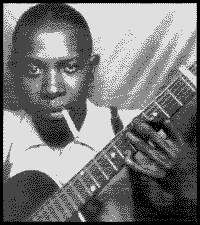
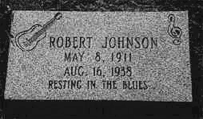

27 июня в Сан-Франциско завершилось очередное судебное заседание по поводу "заимствований" мелодий Дельта-блюза в поп-музыке. Решение суда гласит, что "Роллинг Cтоунз" "несоответствующим образом одолжили" ("improperly borrowed") два знаменитых своих хита: "Love in Vain" и "Stop Breakin' Down" - у легендарного дельтаблюзмэна Роберта Джонсона.
При этом претензии благоразумно предъявляются не к самим участникам группы, а к фирме, выпустившей альбом с этими песнями в исполнении "Роллинг Стоунз". Юридически случай очень запутанный, поскольку в свое время авторские права на песни Джонсона никто и не подумал оформить. Кроме того, защитники резонно заявляют, что песни Джонсона "были частью общей музыкальной библиотеки, которой пользовались многие артисты, работавшие на Юге в эпоху Депрессии". Так что на момент использования этих мелодий "стоунзами" формально авторские права на эти песни отсутствовали. С другой стороны, закон 1997 года вносит новые положения об авторских правах на старые записи, объявляя, что самого факта публикации (издания) достаточно для объявления и признания авторских прав.
Должна ли в результате этого принципиального решения выплачиваться компенсация - это решит следующее судебное заседание в Лос-Анджелесе. (Нравятся юристам комфортабельные курорты). Для нас же важен сам факт: официально подтверждено авторство Роберта Джонсона в песнях, которые были среди первых хитов в карьере "Роллинг Стоунз".

Джонсон был культовой фигурой для всего поколения британских рок-революционеров 60-х: от "Роллинг Стоунз" и "Энималз" до "Крим" и "Лед Зеппелин". Его песни словно обладали мистической привораживающей силой, а виртуозная гитарная техника заставляла думать, что на записи играют два гитариста, а не он один. Стихи Джонсона наполнены бытом и таинствами Миссиссиппи 30-х годов, сальными шутками и оккультными аллитерациями, лирическими зарисовками природы и философскими обобщениями. Именно эта многогранность привлекает к его творчеству современных интерпретаторов. Его песни постоянно исполняются и блюзмэнами, и поп-музыкантами. Появившийся в начале 90-х двойной альбом "Полное собрание записей Роберта Джонсона" имел феноменальных успех. Сам автор умер при неясных обстоятельств, не оставив ни завещания, ни имущества, о котором стоило бы спорить; место его захоронения остается под вопросом. При жизни лишь одна его пластинка пользовалась небольшим местным успехом. Однако за прошедшие 62 года мир понял его песни, и его авторские гонорары давно смущают адвокатскую контору своей анонимностью. Наконец, они нашли адресата.16 июля в Джексоне, Миссиссиппи, состоялось еще одно судебное заседание по поводу наследия умершего без единого цента в кармане Роберта Джонсона. Спорное наследство составляло около 1 000 000$ - авторские отчисления за песни человека, "преследуемого гончими ада". Наследником определен пенсионер из городка Кристал Спрингз (Кристальные ключи), бывший водитель грузовика, занимавшийся перевозкой гравия: Клод Джонсон.
По вынесению вердикта адвокат К.Джонсона сказал: "Мистер Клод счастлив потому, что наконец-то официально подтверждено то, что он сам знал всю свою жизнь: он - сын Роберта Джонсона." Права его оспаривали дальние родственники Джонсона: его сводная сестра Энни Эндерсон, учительница на пенсии из Массачусетса, и внук другой сводной сестры Роберт Харрис, музыкант из Мэррилэнда. Среди их доводов фигурировали утверждения, что Клод получил фамилию от Ар-Эл Джонсона, своего настоящего отца; что Р.Джонсон болел сифилисом и не мог иметь детей.

Кроме того, они требовали проведения экспертизы ДНК для вынесения окончательного решения. На последнее судья Майк Миллз, блеснув знанием песен родного края, заявил: "Это вряд ли будет возможным, поскольку место захоронения Роберта Джонсона неизвестно. Нам известно только, что Джонсон похоронен рядом с шоссе, так, чтобы его усталый истерзанный дух мог отправиться в путь на "Грейхаунде". (Строчка из песни Джонсона "Блюз про меня и про дьявола". "Грейхаунд" - сеть рейсовых междугородных автобусов).Таким образом, решение суда основывается на песнях, мифологии и клятвенно подтвержденных сплетнях. Восхищает соломонова мудрости судьи. Действительно, коли бесспорную истину установить невозможно, а оставлять авторские гонорары Джонсона на благо японо-американской фирмы "Сони-Коламбиа" несправедливо, следует определить наследника. Допустим, Клоду его фамилия досталась от другого "отца", что с того? Главное, что он Джонсон из Миссиссиппи! Как в России Иванову от Иванова, в Германии Мюллеру от Мюллера, истинная справедливость требует, чтобы наследие дельта-блюзмэна Джонсона досталось какому-нибудь Джонсону из Миссиссиппи. А какому именно?.. Какая разница, если речь о народном певце - лишь бы кому-то из народа, а Клод, перевозчик гравия, вполне соответствует...
Тем не менее, формальности разбирательства соблюдены. Мать, Верджи Джейн Смит Кейн, впервые официально потребовала признать отцовство Роберта Джонсона в 1992 году. (Нетрудно заметить: после успеха альбома "Полное собрание..."). В 1998г. ее подруга детства Юля Мэй Уилльямсон подтвердила на внесудебном разбирательстве, что в 1931 году была свидетельницей того, как Джонсон и Кейн занимались сексом. Клод Джонсон родился 9 месяцев спустя. В его свидетельстве о рождении отцом указан рабочий Ар.Эл.Джонсон.
В интервью местной газете Клод рассказал: "Я всю свою жизнь знал, что он мой отец. Мы жили у моих дедушки и бабушки. Они были религиозным и людьми, и считали его музыку дьявольской. Люди тогда верили в это. Они моему папе сказали, что он им ни сколечко не нужен. Они сказали, что он работает на дьявола. Мне не позволяли даже выйти и прикоснуться к нему. Я стоял у двери, а он стоял во дворе. И это была самая близкая наша встреча."
Блюзовая общественность приветствовала решение суда отписать все финансовое наследие Роберта Джонсона его 69-летнему незаконнорожденному сыну. Как раз в момент объявления решения, в нью-йоркском Центральном парке проходил блюзовый фестиваль...